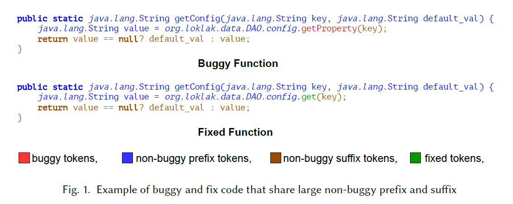
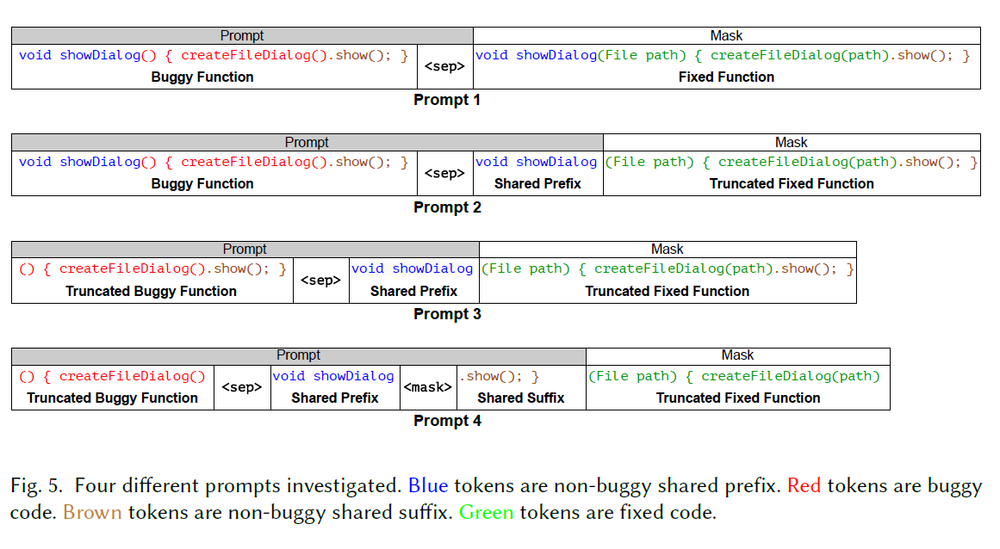
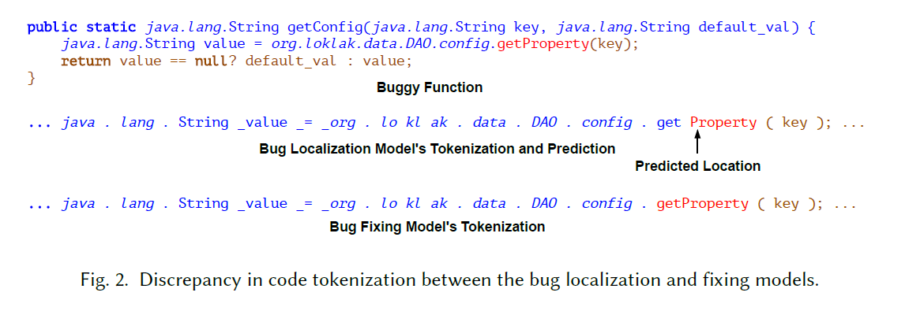
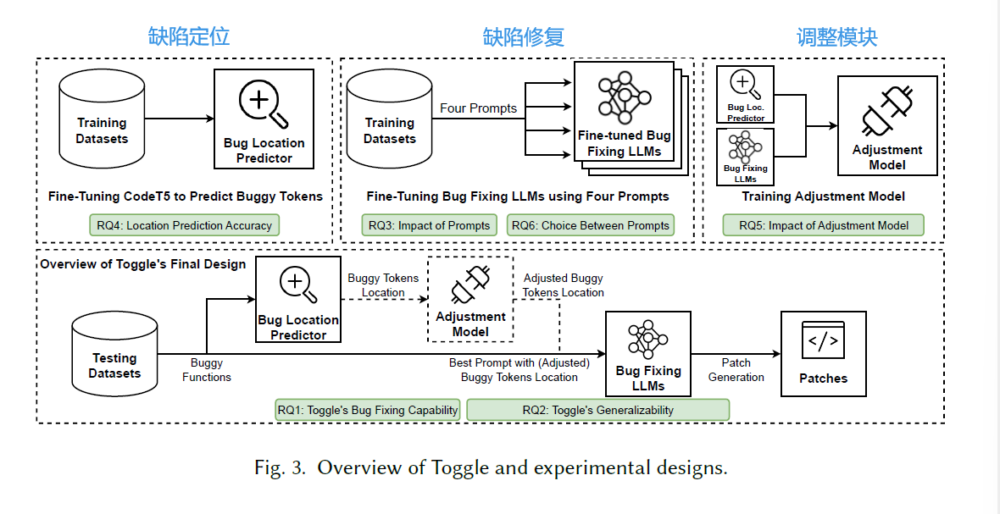
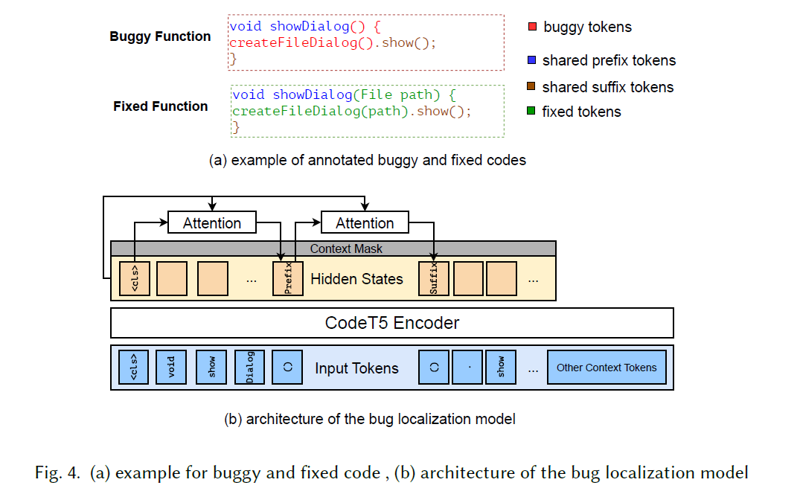
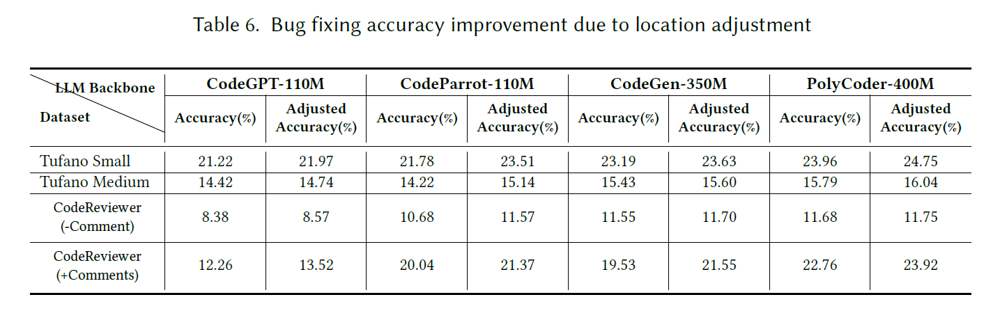
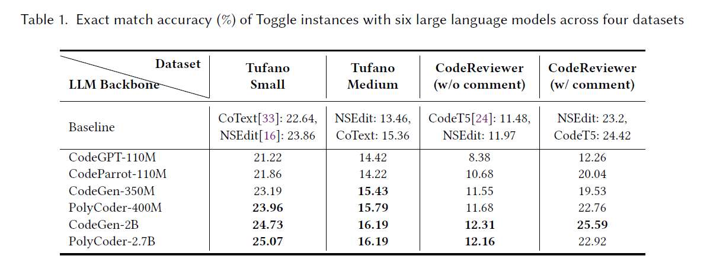
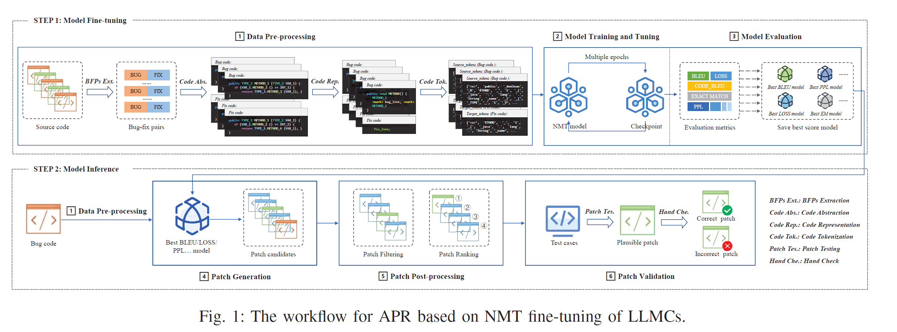
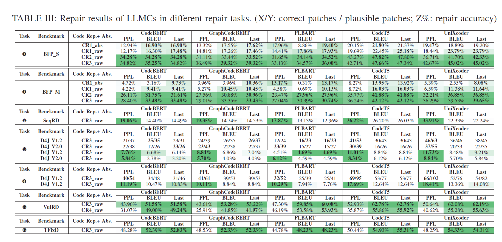

读paper2-基于LLM的缺陷修复
读paper2-基于LLM的缺陷修复
A Deep Dive into Large Language Models for Automated Bug Localization and Repair
来自 Proceedings of the ACM on Software Engineering 。用作启发思路吧，水水的，一二区里没见这刊。反正成果也没开源，全靠几张图。。。
研究概述

现有的工作探索了将整个有错误的函数输入到LLMs中，并使用注释来指导LLMs生成修复好的函数的方法。然而，让LLMs生成整个函数是多余的，因为原有有错误的函数中并不是所有的代码都是错误的。有可能有错误的代码及其相应的修复代码共享一些非错误的前缀和后缀。例如，在图1中，蓝色和棕色的代码是有错误和修复函数共享的前缀和后缀代码。通常，只有少部分有错误的代码需要修改。在给定的例子中，只需要将 “getProperty” 替换为 “get” 就可以生成修复代码。要求LLMs生成这之外的其他代码可能会导致更多的错误，并降低整体的错误修复能力。
问题根源还是在于细粒度，所以该文提出了一种基于token的缺陷定位与修复，避免基于行的细粒度而造成的不必要的重复代码生成及其引出的额外问题。该文设计了四个独特的prompt来对LLM进行fine-tune以进行错误修复，如下图：

对于缺陷定位，原文提到：我们利用编码器LLM（例如CodeT5 ）的能力，带有自注意机制，来识别标记了实际有Bug代码段的起始和结束位置。此外，我们的方法利用可用的上下文信息（例如代码注释）来定位有Bug的标记。
We leverage the power of an encoder LLM (e.g., CodeT5) with a self-attention mechanism to identify the tokens marking the beginning and end of the actual buggy code segment. Additionally, our approach leverages available contextual information (e.g., code comments) to pinpoint the buggy tokens.
对于缺陷定位与缺陷修复直接的连接，原文提到了两个不同阶段的不同模型导致的分词不一致性问题。原文如下：
对于bug定位，我们使用了编码器类型的大型语言模型，如CodeT5，而对于bug修复，则采用了解码器类型的生成式LLM，如CodeGPT和CodeGen。这种设置面临的一个挑战是定位和修复模型的分词器之间存在不一致性和不一致性，这可能会影响整体的修复准确性。这个问题在图2中进行了说明，其中正确的修复方法包括将"getProperty"替换为"get"或将"Property"替换为空字符串。bug定位模型准确地确定了"Property"作为有问题代码的起始标记。然而，在bug修复模型的视角中，“getProperty"被视为一个单独的标记，因此，bug修复模型更容易用"get"这个标记替换"getProperty”，而不是在预测的错误位置删除"Property"。
解决方案就是使用一个可选的Adapter（调整模块）来降低不一致问题，调整模块旨在考虑了定位模型的预测和修复模型的性能后，找到最优的定位。

除了引入一个新的bug定位和修复框架Toggle，该文还进行了一项综合研究，涉及以下六个研究问题。
RQ1研究了Toggle的bug修复效果，重点关注了来自四个类别的四个数据集中的六个fine-tune后的LLM
- 发现1：在fine-tune后，尺寸较大的LLMs具有更好的bug修复准确性。
- 这些发现表明，在应用我们的方法时，若可行，选择较大的LLMs进行fine-tune以进行bug修复。
RQ2 研究了Toggle对未见数据的泛化能力
- 发现2：使用微调后的LLM（CodeParrot-110M）可以有效地泛化到未见的Defects4J基准测试上，在多个指标上超越现有方法。
- 更广泛的影响有两个方面：
- fine-tune过程中prompt的设计可以产生重大影响
- 我们主张采用token粒度的bug位置预测，而不是现有作品中普遍采用的行级或方法级预测。
RQ3 研究了四个不同prompt对fine-tune后LLMs的bug修复能力的影响
- 发现3：为fine-tune设计良好的prompt能够显著提高bug修复准确性。此外，避免生成冗余的共享前缀和后缀可以获得最高的准确性。
- 更广泛的影响是，谨慎设计prompt并避免生成冗余代码对于提高bug修复效果至关重要。
RQ4 研究了上下文信息对bug定位的影响
- 发现4：额外的上下文信息，如错误行号或代码审查评论，显著提高预测bug起始和结束标记的准确性。
- 这一发现表明，如果适用，利用额外的上下文数据来辅助bug修复是有益的。
RQ5 研究了我们的调整模块的益处，该模块旨在解决在bug定位和修复模型中使用的分词器之间的不一致性
- 发现5：调整模块在110 - 400M参数的四个LLMs上始终可以提高bug修复准确性。
- 发现的更广泛意义是，在使用不同的分词器时建议使用调整模块。由于调整模块的训练相对昂贵，因此在使用较小的LLMs时更可取。
RQ6 研究了在前两个最佳prompt（3和4）之间，在bug位置预测中使用哪个更有效
- 发现6：当预测到的前缀和后缀位置非常准确时，prompt4优于prompt3。否则，对于特定的数据集、附加的上下文和基础LLM结构，选择prompt3和4取决于具体情况。
- 更广泛的影响是，在考虑bug位置预测的误差时，prompt3和4都可能是最佳选择，需要进行测试。
实现
实现思路是编码解码器，类似于DL中的序列翻译，当然，中间还有一个调整模块作为Adapter，即同时利用预训练的编码器模型（用于bug定位）和预训练的自回归解码器模型（用于修复bug）。（总觉得对于调整模块来说应该是下图所示的关系，而非像右上图一样将location与fixing一起输入）

缺陷定位：基于预训练的CodeT5编码器模型
给定一个有错误的函数，错误定位模型被训练用于确定共享前缀的结束位置（标记为有错误的标记的起始位置），以及共享后缀的开始位置（指示有错误的标记的结束位置）。位于这两个位置之间的标记被认为是有错误的，需要修复。
如下图（a），错误定位模型被训练用于定位红色部分，通过预测第一个"()“作为有错误的标记的起始位置，以及在”.show"之前的第二个"()"作为有错误的标记的结束位置。

模型输入是 个代码标记和可选的上下文信息（）（例如代码审查注释或提交消息）组成的输入标记化有错误的函数，表示为向量 ，基本对应于图4(b)中黄色灰色框，其中额外的上下文信息可以作为上下文掩码（context mask）使用，如图4(b)所示。在计算损失时，这个掩码通常被用作掩蔽函数，确保上下文窗口之外的位置被选中的概率为零。
通过CodeT5的编码器进行编码，最终得到蓝色部分的代码标记的嵌入，用 表示，其中标注出了出错代码Token区域。 标记是添加在输入开头的特殊标记。 标记的嵌入（ ）用作对其他代码标记嵌入（𝒆）执行自注意力操作的查询向量。
模型使用 表示错误前缀的注意力分数，预测的前缀标记 （即开始位置的错误标记）是具有最高注意力分数的标记：
后缀注意力分数与标记与前缀原理一致。用 上标标识。
缺陷修复：fine-tuned LLMs and Prompt
为了提高中等规模模型的性能，注入“强大”的诱导偏差（indicative bias）至关重要。对于错误修复，错误的位置是一种重要的诱导偏差。有效地利用这种偏差可以大幅提升语言模型的错误修复性能。这也是下面四种prompt的一个很大区别之处。
prompt1是典型的代码补全样式prompt，要求模型生成一个完整的修复函数以替换错误的函数。这个prompt没有利用错误定位的bias。因此，值得注意的一个限制是它不能区分需要修复和不需要修复的部分。例如，图5中prompt1中错误函数部分的共享前缀"void showDialog"和共享后缀".show();"不需要改变。
prompt2部分利用了位置偏差，并排除了预测中的共享前缀标记。共享前缀标记"void showDialog"在输入prompt中提供，以便错误修复模型不需要重新生成它们，只需生成被截断的修复函数。在prompt2中，共享前缀出现了两次：一次出现在错误代码的开头，一次出现在修复函数的开头。我们可以通过截断错误函数来优化这种冗余，如prompt3和4所示。
prompt3通过截断错误代码中的共享前缀标记消除了冗余。这种方法不仅可以防止模型预测非错误前缀，还可以指示模型从prompt的开头开始要求进行修改。通过引入这种强有力的诱导偏差，错误修复模型能够更有效地指导生成修复代码的开始。一旦模型生成了截断的修复代码，附加共享前缀将生成完整的修复代码供开发人员使用。
但是并没有使用非错误后缀标记
prompt4在prompt3中使用的策略基础上进行了改进。除了从错误代码中截断共享的非错误前缀标记(“void showDialog”)，它还截断了共享的非错误后缀标记(“.show();”)。这种方法不仅注入了诱导偏差，而且减少了模型需要生成的标记数。构建prompt4需要两个位置：错误标记的起始位置和结束位置。在实践中，当不知道确切的错误位置时，必须使用我们的位置预测模型进行预测。然而，准确预测两个位置是困难的，预测错误可能会影响prompt的整体有效性。因此，prompt3和prompt4之间的选择需要进一步研究，这将在第3.6节中解决。
调整模块
思路就是将错误的token位置定位区间围绕预测位置进行平移（比如将区间分别前后移动几个token），最终学习一个最佳平移。这更像是对缺陷定位的一种修正。
但是我觉得，积既然这样都能有效，为啥不考虑进行区间扩张与收缩呢。但是扩张与收缩方案也不一定完全容易训练，而且小范围收缩与扩张可能效果并不显著，我觉得可以使用top k个扩张与收缩方案，得到多个修复方案，通过投票或者打分选择最佳方案（瞎想，而且显然会有效率问题）
但是这个思路还是有点意思的，即使错误定位模型无法准确预测位置，只要预测的起始和终止错误令牌位置分别位于真实位置之前和之后，错误修复模型仍然可以修复错误。
反正感觉最后效果非常有限，如图：

实现效果

An Empirical Study on Fine-tuning Large Language Models of Code for Automated Program Repair
来自IEEE/ACM International Conference on Automated Software Engineering (ASE)
https://github.com/LLMC-APR/STUDY
研究概述
选择了5个具有代表性预训练架构的流行的LLMCs，包括CodeBERT、GraphCode-BERT、PLBART、CodeT5和UniXcoder。
考虑了涉及3种编程语言（Java、C/C++和JavaScript）的3种典型的程序修复场景（即错误、漏洞和错误）。
将LLMCs应用于NMT微调范式中的APR工作流程涉及以下步骤：1）数据预处理，2）模型训练和调整，3）模型评估，4）补丁生成，5）补丁后处理，6）补丁验证。

数据预处理
数据预处理阶段旨在将原始源代码转换为LLMC能够高效处理的格式。我们采用常见的做法，即使用 BFPs 进行学习，以将有缺陷的代码转换为方法级别上的修复代码。
代码抽象处理：通过规范化代码元素，代码抽象可以减轻词汇表外（OOV）问题，并有助于模型学习通用的修复模式
代码表示：基于token sequence的四种表示方法
- CR1：NMT-based APR 工作的原始表示，它以整个有缺陷的方法作为输入，以整个修复的方法作为输出。CR1旨在使模型能够自动修复缺陷，无需故障定位（FL）。
- CR2：CR2基于CR1，其中将错误/修复代码块用特殊标记符（<BUGS>，<BUGE>，<FIXS>，<FIXE>）标记，以便模型在FL信息的帮助下学习从错误代码到修复代码的转换。因此，我们分析了代码抽象对 LLMCs 修复能力的影响。
- CR3：受 SequenceR的启发，我们从CR2中去除了修复代码的上下文，以减少模型输出的长度，加快训练和预测速度。这种表示方法用于分析简化修复目标（即输出）对修复能力的影响。（修复代码的上下文与错误代码上下文基本一致，可以看作冗余）
- CR4：这是 VRepair 的多代码块修复的代码表示方法。与CR3不同，CR4使用不同的标记符方式来区分不同的修复行为（添加、删除、替换），因此具有更精细的标记粒度。通过比较，我们可以分析细粒度表示对修复能力的影响。
- 上述四种代码表示方法都支持单个代码块和多个代码块修复场景。
代码标记化：使用subword级别的分词器（byte-pair encoding, BPE），BPE将频繁出现的字符序列替换为一个符号，从而得到一个更紧凑的词汇表。因此，它可以有效地减轻 APR 中的 OOV 问题，并且比单词级别的分词器效果更好
模型训练和调优
将模型都构建为编码器-解码器结构，将大型语言模型（LLMCs）扩展到用于微调的NMT模型架构。
对于仅有编码器的LLMCs，添加解码器以构建Seq2Seq架构，并以监督方式进行微调。
对于编码器-解码器LLMCs，已经是Seq2Seq架构，不需要对结构进行更改。
对于仅有解码器的LLMCs，表现可能明显不如前两种LLMCs。
Model Evaluation & Patch Generation and Validation 非研究重点
研究回答的问题
在软件错误修复、安全漏洞修复和编程错误修复方面分别回答以下研究问题：
RQ1：不同的设计选择如何影响LLMC的修复能力？RQ1研究不同设计选择对LLMC修复能力的影响，可以更好地比较LLMC并提供精细调整LLMC的指导。我们将探究代码抽象、代码表示和检查点选择对实验结果的影响。
RQ2：LLMC的表现与最先进方法相比如何？RQ2旨在探索LLMC的修复能力。我们在多种缺陷类型、编程语言和缺陷复杂度下对其性能进行系统评估。此外，我们将LLMC与最先进的自动程序修复工具进行比较，以了解LLMC是否更为优越。
RQ3：哪些因素限制了精细调整LLMC的有效性？RQ3旨在揭示LLMC在精细调整时进行自动程序修复任务的一些缺点，并指出一些未来改进的方向。
实验结果-软件缺陷修复
表III展示了LLMC在不同修复任务上的修复结果：

不同的设计选择如何影响LLMC的修复能力？
代码抽象
即表III中abs与raw的区别。对于修复结果有影响，但影响较小
这个现象有两个主要原因。首先，由于LLMC通常是在未经处理的原始源代码上进行预训练的，它们更适合于与下游任务使用相同的未经处理的原始数据。其次，代码抽象可能会丢失一些语义信息（例如特殊的函数和变量名），这使得学习修复模式变得困难。
在精调LLMC时，使用未经代码抽象处理（即原始源代码）的数据格式更合适。
代码表示
CR3可以更有效地在LLMC上工作。首先，使用特殊标记标记故障/修复位置可以使模型专注于有针对性的学习代码修复行为。其次，LLMC受到长序列问题的困扰。随着输入/输出长度的增加，LLMC的修复准确性会降低。从输出序列中剔除不相关的上下文等效于减少输出长度，因此可以提高模型的修复能力。
CheckPoint选择
BLEU更好地与训练数据对齐，而PPL表现出更好的泛化性能。当数据特征相似时，使用BLEU是更好的选择；否则，更倾向于使用PPL。然而，在实际中很难知道训练和测试样本之间的差异。因此，我们采用了之前的研究的做法，使用 ensemble
strategy 来结合多个检查点（PPL/BLEU/Last）以增强修复能力。
LLMC的表现与最先进方法相比如何？
LLMC的修复能力在bug修复任务中显示出很大的潜力。此外，小规模模型可能会取得类似甚至更好的结果比大模型。
原文提到：
我们发现使用LLMC UniXcoder和CodeT5在bug修复任务上超过了之前的工作。这表明，对LLMC进行微调具有很大的APR研究潜力。值得注意的是，较小规模的UniXcoder-base（125M）取得了类似甚至更好的结果比CodeT5-base（220M）。
但是其实上一篇论文的准确率与模型大小几乎成正比。。。。
但是两篇选的模型也不一样，所以还是有待商榷
同时LLMCs修复multi-hunk更困难。
对于数据泄露，即预训练数据（CSN，即CodeSearchNet）与测试基准（D4J，即Defects4J）之间的重叠，经过充分微调后，LLMCS受数据泄露的影响较小。然而，这暴露了LLMCS在微调范式下的灾难性遗忘问题。
限制微调LLMCS有效性的因素是什么？
缺乏修复上下文。方法级别的BFPs和有限的模型输入/输出长度可能会缺失指导修复所需的上下文信息，从而限制LLMC的修复能力。
计算资源和模型大小。计算资源的缺乏和模型大小过大可能会阻碍LLMCs生成更多候选补丁。
实验结果-安全漏洞修复
不同设计选择如何影响 LLMCs 的修复能力？
代码表示：使用细粒度的代码表示方式不利于充分发挥 LLMCs 的修复能力，CR3 仍然是在漏洞修复方面最好的表示方法。
原因：使用 CR3 得到的修复结果都优于使用 CR4 得到的结果。这是因为这两种表示方法在标记修复行为的复杂性方面存在差异。在 CR3 中，所有的修复行为都被看作是替换操作。而在 CR4 中，使用了三个不同的标记来表示添加、删除和替换操作，提供了更细粒度的标记级别的修复位置。然而，这种策略的复杂性可能会妨碍模型理解不同的修复动作并准确地在精确的位置实施修复。因此，模型的修复能力可能会受到影响。事实上，所有的修复行为都可以简化为替换操作（即修复替换了错误位置）。虽然 CR3 使用了粗粒度的标记方法，但它简化了修复操作，从而提高了模型的修复能力。
检查点选择：使用 BLEU 得到的修复结果优于使用 PPL 和 LOSS 得到的结果。
与最先进方法相比，LLMC 的性能如何？
性能与泛化性较好，multi-hunk仍然是一个挑战。
限制精调LLMC效果的因素是什么？
- 长尾问题。当某一类型的漏洞样本较少时，性能较差。这是经典的长尾问题，挑战了在具有不均衡类别分布的大型数据集上对模型进行有效训练。
- 长序列问题。随着输入/输出序列长度的增加，模型的修复能力降低。这是一个普遍性的问题。
Discussion
讨论了我们研究中发现的影响LLMC修复能力的限制，并寻求改进的方向。
预训练知识的丧失/遗忘问题：在微调后，LLMC可能会失去一些从预训练阶段学到的知识。此外，我们注意到AlphaRepair 将修复任务转化为文本填空任务（MLM），而不是翻译任务（NMT）。文本填空任务更适合模型的预训练任务（即MLM），即根据上下文令牌预测掩码位置上的令牌。然而，目前不清楚使用这两种范式（NMT和MLM）的修复能力有何不同。因此，我们建议探索以下两个方向。
- D1：缓解灾难性遗忘。
- D2：NMT vs. MLM。通过使用NMT和MLM任务对LLMC进行微调，可以探索这两种学习范式之间的修复能力差异。
缺乏修复上下文和长序列问题。
- D1：精确上下文提取。通过数据/控制流分析，我们可以修剪掉无关的上下文，帮助确定缺陷位置并指导修复。
- D2：关键修复成分。我们可以将基于冗余假设的传统APR技术与LLMC集成，将额外的修复元素引入模型输入。
- D3：突破长度限制。对于涵盖更多修复成分的长序列建模，可以采用MegaByte方法。此外，采用滑动编码器和解码器（SLED） 将输入划分为重叠的块可能有助于接受长和/或依赖性方法。
计算资源和模型大小：通常较大的模型大小对计算资源提出了高要求。因此，如何在低资源场景中优化部署LLMC的问题是一个实际问题。
- D1：模型蒸馏。
- D2：高效推理。在生成更多候选修复时，可以采用稀疏机制和有限差异束搜索 limited discrepancy beam search
- D3：参数效率微调（PEFT）。
长尾问题。
- D1: 数据增强。
- D2: 组合多个PLs。我们还可以使用meta learning，将多个PLs进行整合，以增强LLMC的多语言修复能力。
Multi-Hunk Fixes。
- D1：捕捉复杂代码依赖性。捕获全局依赖关系的树或图结构可以增强模型理解和处理复杂修复任务的能力。
- D2：提取深层次的语义信息。利用高层次的语义信息（如字节码和中间表示）可以帮助模型理解缺陷的根本原因，从而增强其修复能力。